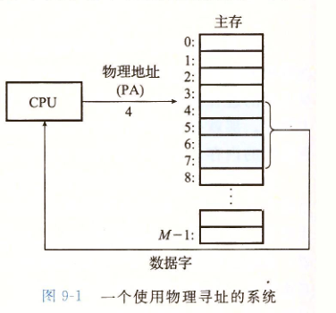
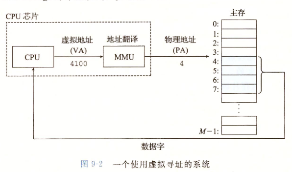

物理寻址
CPU访问内存使用物理地址，下图中展示了一个物理寻址的试例，该试例表示读取从物理地址4开始的4个字节

虚拟寻址
CPU通过同城一个
虚拟地址（VA）来访问主存，这个虚拟地址在被送到内存之前先转换成适当的物理地址。

虚拟内存作为缓存的工具
虚拟内存被组织为一个由存放在磁盘上的N个连续的字节大小的单元组成的数组。每字节都有一个唯一的虚拟地址，作为到数组的索引。磁盘上的数据被分割成块，这些块作为磁盘和主存之间的传输单元。VM系统通过将虚拟内存分割为
虚拟页（大小固定）。虚拟页面的集合
未分配：VM系统还未分配（或未创建）的页。未分配的块没有任何数据和他们相关联。
缓存的：当前已分配在物理内存中的已分配页。
未缓存的：未缓存在物理内存中的已分配页
虚拟内存作为内存保护的工具
通过在每个PTE中添加许可位，SUP位表示进程是否必须运行在内核（超级用户）模式下才能访问该页。运行在内核模式中大的进程可以访问任何页面，但是运行在用户模式中的进程只允许访问那些SUP为0的页面。READ位和WRITE位控制对页面的读和写的访问。
静态地址映射：程序装入时由操作系统完成逻辑地址到物理地址的映射
逻辑地址VA，装入地址BA，物理地址MA。MA = BA + VA
特点：程序运行之前确定映射关系，程序装入后不能移动，如果移动必须放回原来的位置，程序占用连续的内存空间
动态地址映射：在程序执行过程中把逻辑地址转换为物理地址
特点：程序占用的内存空间可动态变化（要求及时更新基址BA），程序不要求占用连续的内存空间，便于多个进程共享代码
缺点：硬件支持MMU（内存管理单元），软件复杂
虚拟存储：程序过大或过多，内存不够，不能运行。多个程序并发时地址冲突，不能运行